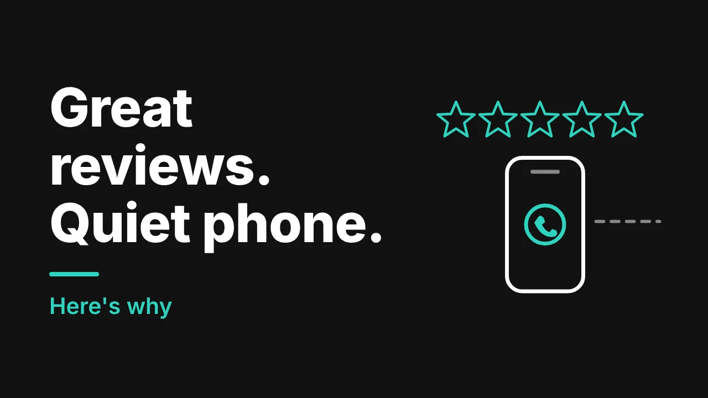

Your Google profile is full of five-star reviews. Customers say you are reliable, thorough and gentle with their pets. And still, the phone barely rings.
This is one of the most common things we see on cleaning company websites, and it is almost never a problem with your cleaning. It is what happens in the few seconds after someone finds you. Here are six reasons it happens and how to fix each one.
What reviews actually do for you
Reviews matter. Google says that more reviews and positive ratings can help your local ranking, and that replying to reviews shows you value feedback. In Whitespark's 2023 expert survey (reported by Search Engine Land), high Google ratings were among the top factors for showing up in the map results.
But people find you two ways: the map results and the regular results below them. Reviews help most with the map. For the regular results, the same survey put a dedicated page for each service, links inside your own site and links from other websites at the top. So you can be well loved on the map and still lose the person who clicks through to a weak website.
Reason 1: Your website doesn't show your reviews
A visitor clicks from Google to your site. They have just seen 4.9 stars, and now the homepage says nothing about it. The proof they came for is missing.
The fix: put your three best reviews near the top of the page and next to every quote button. Use the customer's first name and area, and link to your Google Business Profile so people can see the rest.
Reason 2: Your phone number is hard to find or can't be tapped
People searching for a cleaner are often on their phone, in a hurry. If they have to hunt for your number, or copy and paste it, many will simply go back and try the next company.
The fix: a tap-to-call button at the top of every page on mobile, your hours right beside it, and the same number in your footer.
Reason 3: Asking for a quote feels like work
Long forms. No idea what it will cost. No clue when you will reply. Each one is a reason to leave.
The fix: a short form with name, phone, service and postal or zip code. Add a line about how fast you reply. If you can, give a starting price or a typical range so visitors know they are in the right place. Our post on why your website isn't getting quote requests covers this in more detail.
Reason 4: Your reviews mention things your website doesn't
Read your last 20 reviews. Do customers praise your move-out cleaning, your pet-friendly products or the way you handle keys and alarm codes? Now check your website. If those things aren't mentioned, there is a gap between what people say about you and what Google can match you to.
The fix: pull out the five phrases that come up most in your reviews and build a page or section around each one. That is the quickest way to get a clearer match between your reviews and your site. A good starting point is our list of the pages every cleaning company website needs.
Reason 5: You don't say where you work
Google says that distance matters for local results. Customers want to know you actually come to their street. In Calgary that might mean NW, NE, SW and SE. In Dallas it might mean Plano, Frisco, Irving and Richardson. If your site just says "serving the greater area," nobody feels sure.
The fix: one page per area you serve, with real details: the neighbourhoods you cover, the types of buildings you clean, and a review from a customer there. Learn more about cleaning company marketing in Calgary, Alberta or cleaning company marketing in Dallas, Texas.
Reason 6: Your profile and your website don't match
Different phone numbers. Different hours. Services listed on one that aren't on the other. Small mismatches make people nervous, and nervous people don't book.
The fix: use the same business name, address, phone number and service list everywhere. And reply to your reviews, good and bad. It shows a real person is behind the business.
A 5-minute test: be your own customer
Grab your phone and do this:
- Search "[your service] + [your city]".
- Tap your listing. Does the profile look complete and current?
- Tap through to your website. How long does it take to load?
- Without scrolling much, can you find your phone number, a reason to trust you and a way to ask for a quote?
- Count the taps from search result to calling you.
If it takes more than a few taps or any step feels confusing, you have found your leak.
How the best cleaning websites handle this
On the cleaning sites we build, the reviews, the phone number and the quote button sit together above the fold. Every service and every area has its own page. The form is short. The site is quick on a phone. None of this is complicated, but almost no template gets it right out of the box. That is where web design for cleaning companies and good local SEO for cleaning companies make the difference.
If you want more reviews too, here is a simple routine for getting more Google reviews and a guide to Google Business Profile tips for Calgary cleaning companies. Just don't chase more reviews until the website behind them is ready. If you want people to book without calling at all, an online booking system can catch the after-hours enquiries.